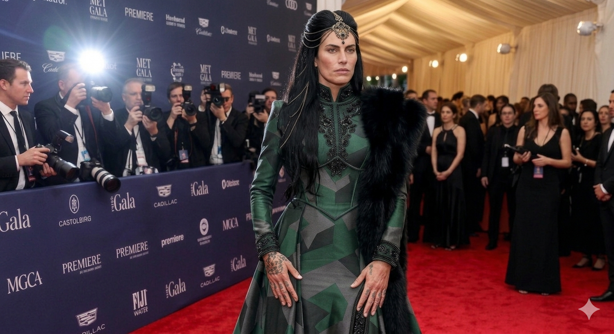

House Rhill is one of two surviving plains-people provinces in the kingdom. The other is Rue. They share a river border and a way of fighting that no other province has ever fully understood.
Rhill is led by a Matriarch. The title is role-specific, not relational — a Matriarch holds her seat through standing, not marriage. Spouses of Matriarchs hold no derivative title. Roven Navori is Khlora's husband. He is not a Patriarch, and Rhill has never used the word.
The province is fixed-population now — not nomadic in living generations. But the cultural register has not softened. Hunting is still practiced by choice, ceremonial and everyday. The women of Rhill remain the foremost trackers in the kingdom. Spears are the cultural weapon, equal to any blade. Officer headdresses are earned, never given. Beards on men mark cultural maturity. Pearl jewelry — drawn from the Plains Predator — is the most valuable artifact the region produces, and is never gifted outside the region.
This is a modern world. There are cars, glass, electric light, photography. None of that is in tension with what Rhill has kept. Heritage is worn deliberately, not performatively. A leather coat with fur trim and beaded braids walks across a stone terrace beside a Gem Engine in the drive. Both belong. Neither is costume.
House Rhill keeps two distinct visual registers, and the distinction is itself doctrine.
At state functions, weddings, councils, and any occasion where Rhill is meant to be looked at, the house wears its colors openly: emerald green, cream, and gold, with bronze metalwork as the cultural signature. The colors are not subtle. They are not meant to be. A Rhill in formal dress is unmistakable from across a ballroom.
In the field, the colors disappear. Rhill battle attire is rendered entirely in earth tones — deep umber, warm sienna, burnt sand, dark brown — the palette of the plains themselves. Officer-tier feathers worn into combat are likewise earth-toned, terrain-blended. The bronze metalwork remains as the constant cultural signature, but it is the only carry-through. Bright house colors on open grassland is a tactical mistake plains-people do not make.
This sets Rhill apart from neighbors. Martial wears its colors into war as intimidation. Galmir-Azane wears its colors into war as ceremonial statement. Rhill alone wears one palette to be seen and a different palette to win. The doctrine is older than the council seat, older than the modern world. The house has not seen reason to revise it.

The Hadean War took three of Khlora's children — two daughters and a son. She has never publicly named them, and the house does not press her to. The grief is hers and Roven's; what they have done with it is everyone's.
Eleven children is what House Rhill has now. Eight surviving. The four eldest were born before or during the war and fought through it as adults. The four youngest — including the long-awaited youngest son Koran, born around the time of the Rebirth — were born into a Rhill that had already been rebuilt for them. The gap between the two groups is not one of love. It is one of access. The pre-war children carry something the post-war children will never reach. This is not cruelty. It is timing.
Khlora rebuilt deliberately. Six children after the war was reconstruction, not excess — a Matriarch returning to her line what the war had taken. Roven was beside her through every season of it.
